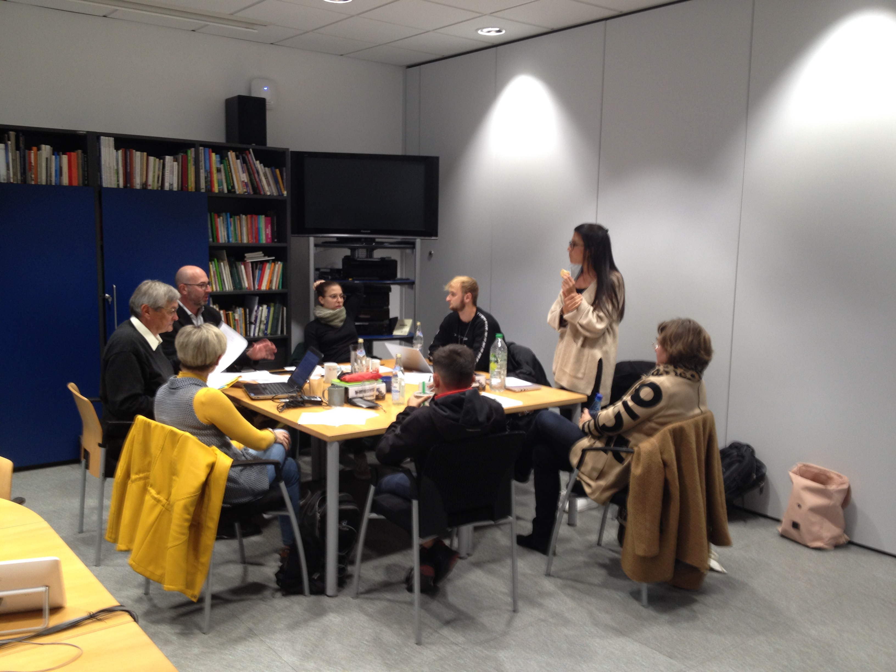
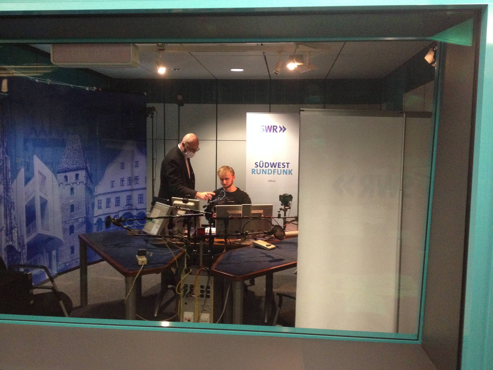

Der Regionale Klimapodcast für Ehingen
Der Regionale Klimapodcast von Ehingern für Ehinger entstand aus einer kleinen Gruppe des Regionalen Klimagesprächs während meiner SDG-Tätigkeit bei der Lokalen Agenda in Ehingen. Dieser soll eine Plattform bieten um den Dialog über jegliche Umwelt- und Klimathemen zu fördern und Menschen in der Region weiter zu vernetzen. Hier unser Podcast-Cover von Joe Schuster:

Wir haben bei der Erstellung der Podcasts viel dazugelernt, und hatten auch eine Menge Spaß dabei, hier die zwei letzten Folgen des Podcasts mit mir:
Folge #006:
Folge #007: Landwirtschaft im Wandel
SWR-Beitrag: Landwirtschaft im Wandel
Angeregt durch den Klimapodcast entschloss sich die Volkshochschule Ehingen im Herbst 2021 einen Kurs zum Thema "Podcasts und Hörbeiträge erstellen" an, an dem ich kurzfristig auch teilnahm. Unsere Hörbeiträge nahmen wir in Zusammenarbeit mit dem SWR in Ulm in deren Studios auf und diese wurden sogar auf der Klingenden Landkarte der ARD-Themenwoche veröffentlicht!
 Hier nehmen wir gerade unsere Beiträge für den vhs-Kurs auf. Das ganze hat sehr viel Spaß gemacht und wir haben dabei eine Menge von Frank Wiesner lernen können:D